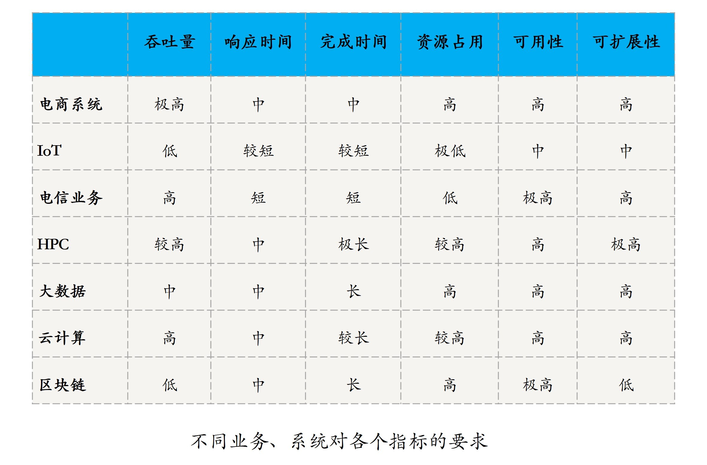

- 00 开篇词 四纵四横，带你透彻理解分布式技术.md.html
- 01 分布式缘何而起：从单兵，到游击队，到集团军.md.html
- 02 分布式系统的指标：啥是分布式的三围.md.html
- 03 分布式互斥：有你没我，有我没你.md.html
- 04 分布式选举：国不可一日无君.md.html
- 05 分布式共识：存异求同.md.html
- 06 分布式事务：All or nothing.md.html
- 07 分布式锁：关键重地，非请勿入.md.html
- 08 分布式技术是如何引爆人工智能的？.md.html
- 09 分布式体系结构之集中式结构：一人在上，万人在下.md.html
- 10 分布式体系结构之非集中式结构：众生平等.md.html
- 11 分布式调度架构之单体调度：物质文明、精神文明一手抓.md.html
- 12 分布式调度架构之两层调度：物质文明、精神文明两手抓.md.html
- 13 分布式调度架构之共享状态调度：物质文明、精神文明多手协商抓.md.html
- 14 答疑篇：分布式事务与分布式锁相关问题.md.html
- 15 分布式计算模式之MR：一门同流合污的艺术.md.html
- 16 分布式计算模式之Stream：一门背锅的艺术.md.html
- 17 分布式计算模式之Actor：一门甩锅的艺术.md.html
- 18 分布式计算模式之流水线：你方唱罢我登场.md.html
- 19 分布式通信之远程调用：我是你的千里眼.md.html
- 20 分布式通信之发布订阅：送货上门.md.html
- 21 分布式通信之消息队列：货物自取.md.html
- 22 答疑篇：分布式体系架构与分布式计算相关问题.md.html
- 23 CAP理论：这顶帽子我不想要.md.html
- 24 分布式数据存储系统之三要素：顾客、导购与货架.md.html
- 25 数据分布方式之哈希与一致性哈希：“掐指一算”与“掐指两算”的事.md.html
- 26 分布式数据复制技术：分身有术.md.html
- 27 分布式数据之缓存技术：“身手钥钱”随身带.md.html
- 28 分布式高可靠之负载均衡：不患寡，而患不均.md.html
- 29 分布式高可靠之流量控制：大禹治水，在疏不在堵.md.html
- 30 分布式高可用之故障隔离：当断不断，反受其乱.md.html
- 31 分布式高可用之故障恢复：知错能改，善莫大焉.md.html
- 32 答疑篇：如何判断并解决网络分区问题？.md.html
- 33 知识串联：以购买火车票的流程串联分布式核心技术.md.html
- 34 搭建一个分布式实验环境：纸上得来终觉浅，绝知此事要躬行.md.html
- 特别放送 Jackey：寄语天涯客，轻寒底用愁.md.html
- 特别放送 分布式下的一致性杂谈.md.html
- 特别放送 崔新：追根溯源，拨开云雾见青天.md.html
- 特别放送 徐志强：学习这件事儿，不到长城非好汉.md.html
- 特别放送 那些你不能错过的分布式系统论文.md.html
- 结束语 为什么说提升职业竞争力要从尊重、诚实开始？.md.html
- 捐赠
02 分布式系统的指标：啥是分布式的三围
你好，我是聂鹏程。
在上一篇文章中，通过对分布式发展历程的学习，我们对分布式技术有了一个整体印象。接下来，我们就再来看看可以用哪些指标去具体地衡量一个分布式系统。如果你已经对分布式系统的指标了解得很清楚了，可以直接跳过这篇文章，学习下一讲的内容。
分布式系统的指标
从分布式技术的起源可以看出，分布式系统的出现就是为了用廉价的、普通的机器解决单个计算机处理复杂、大规模数据和任务时存在的性能问题、资源瓶颈问题，以及可用性和可扩展性问题。换句话说，分布式的目的是用更多的机器，处理更多的数据和更复杂的任务。
由此可以看出，性能、资源、可用性和可扩展性是分布式系统的重要指标。没错，它们就是分布式系统的“三围”。接下来，我们一起来看看这几个指标吧。
性能（Performance）
性能指标，主要用于衡量一个系统处理各种任务的能力。无论是分布式系统还是单机系统，都会对性能有所要求。
不同的系统、服务要达成的目的不同，关注的性能自然也不尽相同，甚至是相互矛盾。常见的性能指标，包括吞吐量（Throughput）、响应时间（Response Time）和完成时间（Turnaround Time）。
吞吐量指的是，系统在一定时间内可以处理的任务数。这个指标可以非常直接地体现一个系统的性能，就好比在客户非常多的情况下，要评判一个银行柜台职员的办事效率，你可以统计一下他在1个小时内接待了多少客户。常见的吞吐量指标有QPS（Queries Per Second）、TPS（Transactions Per Second）和BPS（Bits Per Second）。
- QPS，即查询数每秒，用于衡量一个系统每秒处理的查询数。这个指标通常用于读操作，越高说明对读操作的支持越好。所以，我们在设计一个分布式系统的时候，如果应用主要是读操作，那么需要重点考虑如何提高QPS，来支持高频的读操作。
- TPS，即事务数每秒，用于衡量一个系统每秒处理的事务数。这个指标通常对应于写操作，越高说明对写操作的支持越好。我们在设计一个分布式系统的时候，如果应用主要是写操作，那么需要重点考虑如何提高TPS，来支持高频写操作。
- BPS，即比特数每秒，用于衡量一个系统每秒处理的数据量。对于一些网络系统、数据管理系统，我们不能简单地按照请求数或事务数来衡量其性能。因为请求与请求、事务与事务之间也存在着很大的差异，比方说，有的事务大需要写入更多的数据。那么在这种情况下，BPS更能客观地反映系统的吞吐量。
响应时间指的是，系统响应一个请求或输入需要花费的时间。响应时间直接影响到用户体验，对于时延敏感的业务非常重要。比如用户搜索导航，特别是用户边开车边搜索的时候，如果响应时间很长，就会直接导致用户走错路。
完成时间指的是，系统真正完成一个请求或处理需要花费的时间。任务并行（也叫作任务分布式）模式出现的其中一个目的，就是缩短整个任务的完成时间。特别是需要计算海量数据或处理大规模任务时，用户对完成时间的感受非常明显。
资源占用（Resource Usage）
资源占用指的是，一个系统提供正常能力需要占用的硬件资源，比如CPU、内存、硬盘等。
一个系统在没有任何负载时的资源占用，叫做空载资源占用，体现了这个系统自身的资源占用情况。比如，你在手机上安装一个App，安装的时候通常会提示你有多少KB，这就是该App的空载硬盘资源占用。对于同样的功能，空载资源占用越少，说明系统设计越优秀，越容易被用户接受。
一个系统满额负载时的资源占用，叫做满载资源占用，体现了这个系统全力运行时占用资源的情况，也体现了系统的处理能力。同样的硬件配置上，运行的业务越多，资源占用越少，说明这个系统设计得越好。
可用性（Availability）
可用性，通常指的是系统在面对各种异常时可以正确提供服务的能力。可用性是分布式系统的一项重要指标，衡量了系统的鲁棒性，是系统容错能力的体现。
系统的可用性可以用系统停止服务的时间与总的时间之比衡量。假设一个网站总的运行时间是24小时，在24小时内，如果网站故障导致不可用的时间是4个小时，那么系统的可用性就是4/24=0.167，也就是0.167的比例不可用，或者说0.833的比例可用。
除此之外，系统的可用性还可以用某功能的失败次数与总的请求次数之比来衡量，比如对网站请求1000次，其中有10次请求失败，那么可用性就是99%。
你可能经常在一个系统的宣传语中见到或听到3个9（或3N，3 Nines）、5个9（或9N，9 Nines）。这些宣传语中所说的3个9、5个9，实际上就是系统厂商对可用性的一种标榜，表明该系统可以在99.9%或99.999%的时间里能对外无故障地提供服务。
讲到了可用性，你可能还会想到一个非常近似的术语：可靠性（Reliability）。那可靠性和可用性有什么区别呢？
可靠性通常用来表示一个系统完全不出故障的概率，更多地用在硬件领域。而可用性则更多的是指在允许部分组件失效的情况下，一个系统对外仍能正常提供服务的概率。
杰夫 · 迪恩（Jeff Dean）曾在Google I/O大会上透露：谷歌一个基于1000台通用计算机的集群，一年之内就有1000+硬盘会出现故障。由于现在比较常见的分布式系统基本上都是基于通用计算机的，这就意味着在这些系统中无法实现真正的可靠，所以我们也会在一些场合见到可靠性和可用性交换使用的情况。
可扩展性（Scalability）
可扩展性，指的是分布式系统通过扩展集群机器规模提高系统性能(吞吐量、响应时间、 完成时间)、存储容量、计算能力的特性，是分布式系统的特有性质。
分布式系统的设计初衷，就是利用集群多机的能力处理单机无法解决的问题。然而，完成某一具体任务所需要的机器数目，即集群规模，取决于单个机器的性能和任务的要求。
当任务的需求随着具体业务不断提高时，除了升级系统的性能做垂直/纵向扩展外，另一个做法就是通过增加机器的方式去水平/横向扩展系统规模。
这里垂直/纵向扩展指的是，增加单机的硬件能力，比如CPU增强、内存增大等；水平/横向扩展指的就是，增加计算机数量。好的分布式系统总是在追求“线性扩展性”，也就是说系统的某一指标可以随着集群中的机器数量呈线性增长。
衡量系统可扩展性的常见指标是加速比（Speedup），也就是一个系统进行扩展后相对扩展前的性能提升。
- 如果你的扩展目标是为了提高系统吞吐量，则可以用扩展后和扩展前的系统吞吐量之比进行衡量。
- 如果你的目标是为了缩短完成时间，则可以用扩展前和扩展后的完成时间之比进行衡量。
不同场景下分布式系统的指标
我们都希望自己的分布式系统是高性能、高可用、高扩展和低资源占用的。但出于硬件成本、开发效率等因素的约束，我们无法在性能、可用性、可靠性和资源占用做到面面俱到。因此，在不同的业务场景中，设计者们需要有所取舍。
接下来，我带你一起看一下典型的电商、IoT、电信、HPC（高性能计算）、大数据、云计算、区块链等业务或系统对不同指标的诉求。
- 电商系统。对于一个电商系统而言，系统设计者最看重的是吞吐量，为了处理更多的用户访问或订单业务，甚至不惜牺牲一些硬件成本。
- IoT。对于一个IoT系统而言，设计者最看重的是资源占用指标，因为在一些功能极简的IoT设备上RAM、ROM的可用资源通常都是KB级的。
- 电信业务。对于电信业务而言，最重要的无疑是响应时间、完成时间，以及可用性。因为，你在打电话时不希望你的声音半天才被对方听到，也不希望半天才听到对方的回应，更不希望你的电话无法拨出。
- HPC。HPC系统最显著的特点是任务执行时间极长，一个天体物理任务的分析和计算通常耗时数周甚至数月。因此，通过水平扩展来提高系统的加速比，是HPC系统设计者需要关注的。
- 大数据。大数据任务的处理时间可能相对HPC系统来讲比较短，但常见的完成时间也达到了小时级，所以扩展性也是大数据系统首先要考虑的。
- 云计算。对于一个云计算系统而言，常见任务是虚拟主机或容器的创建、资源调整、销毁等操作，如何减少这些操作的完成时间，从而提升用户体验是设计者们要重点关注的。另外，云计算系统本质上卖的是资源，那么降低系统本身的资源开销，也是系统设计的重中之重。
- 区块链。区块链的吞吐量比较低，比特币的TPS只有7次每秒，单平均一次交易的确认就需要10分钟左右，因此吞吐量和完成时间通常是区块链系统设计者的首要目标。

总结与思考
按照不同维度，分布式系统的指标可以分为性能、资源占用、可用性、可扩展性这四大类。我们自然希望自己的系统，是高性能、高可用、高扩展和低资源占用的，但考虑到硬件成本、开发效率等因素，必须要在设计不同的系统、业务时有所取舍。
所以，我又和你分析了典型的电商、IoT、电信、HPC（高性能计算）、大数据、云计算、区块链等业务或系统的不同诉求，进而得出了系统设计者需要关注哪些指标。你在设计其他类型的系统时，可以按照这个思路进行取舍。
我在文中提到了，分布式系统的指标之间会存在一些冲突或约束。那你不妨思考一下：我们今天讲解的指标中，哪些指标之间是相互制约、相互冲突的，它们又是如何制约的呢？
我是聂鹏程，感谢你的收听，欢迎你在评论区给我留言分享你的观点，也欢迎你把这篇文章分享给更多的朋友一起阅读。我们下期再会！
© 2019 - 2023 Liangliang Lee. Powered by gin and hexo-theme-book.